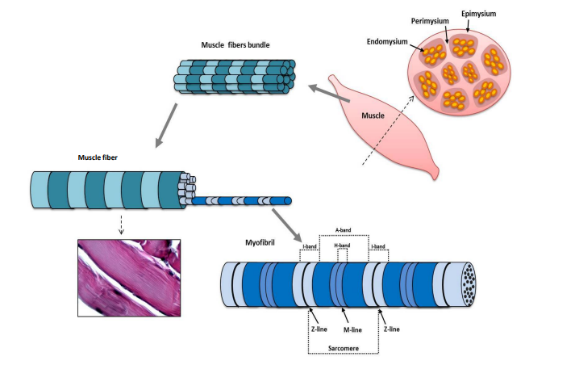

Read the text and answer the following questions. If there is a word you don't understand, you can look it up here.
|
Skeletal muscle is composed of a variable number of muscle fibers and is surrounded by connective tissue, the epimysium, which is connected to the tendon, the structure responsible for the insertion of the muscle to the bone segment. Connective tissue septa originate from epimysium and surround groups of muscle fibers, forming the perimysium. Each muscle fiber (approximate dimensions of 100 µm in diameter and 1 cm in length) is surrounded by reticular connective tissue, which constitutes the endomysium. The epimysium, perimysium and endomysium vascularize and innerve the muscle. Satellite cells are adherent to the sarcolemma of muscle fibers, contributing to muscle growth, repair, and regeneration. The sarcoplasm has all cytoplasmic organelles, but consists mostly of myofibrils that, occupying most of the available space, push the numerous nuclei at the periphery of the muscle fiber. The myofibrils are aligned along the longitudinal axis of the muscle fiber and are linked to each other, with the sarcolemma and other cytoplasmic organelles due to several cytoskeletal proteins such as plectin, filamin and dystrophin. Myofibrils consist of myofilaments that are arranged in a well-defined order responding functionally to the contractile function. There are two types of myofilaments, thick and thin, arranged in a well-defined order responsible for the typical cross-banding. The thick myofilaments, consisting of bundles of myosin molecules, are arranged parallel to each other and constitute the A-band, which contains the entire length of a single thick filament. Its central part is called the H-band, which indicates the zone of the thick filaments that is not superimposed by the thin filaments. The thin myofilaments are structurally composed of actin filaments (F-actin), which are arranged parallel to each other and determine the I-band, where the thin filaments are not superimposed by thick filaments, and the A-emibands. The fragment of myofibril delimited by two Z lines is called sarcomere, which is the functional unit of the muscle fiber, and is able to contract through the sliding of the thin filaments on thick ones.  |